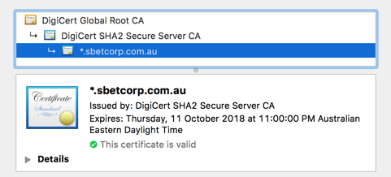
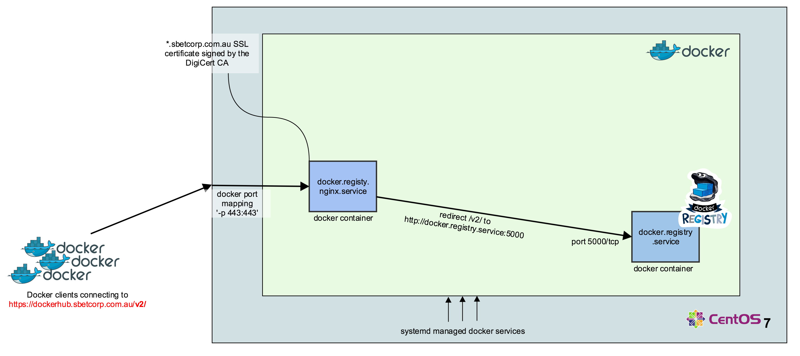

I work at
SolAr (Solution Architecture and Engineering) team
But before that
bit of a diversion
TRIZ stands for "Theory of Solving Invention-related problems"
when translated from Russian
For our conversation today, however you need to know
one of the main principles of TRIZ
which says...
At the heart of any [technical] problem
there is one or more conflict
or contradiction
A TRIZ-savvy person solves a given problem by
Imagine a water pipe. Say, a copper one...
You need to determine which direction water flows inside it.
The contradiction here is between...
your sight
and the pipe material
Remember that you are in the middle of the XX century
So use your force...
And, therefore, to a particular set of contradictions
For example...
Further to that
you ruled out off-the-shelf solutions
i.e. Nexus, Artifactory
The Registry itself comes as a Docker image
therefore we need to get the Docker engine up and running first
Here are the steps
[appsdeploy@dckrepc701s2 ~]$ sudo yum update
...
[appsdeploy@dckrepc701s2 ~]$ sudo tee /etc/yum.repos.d/docker.repo <<-'EOF'
[dockerrepo]
name=Docker Repository
baseurl=https://yum.dockerproject.org/repo/main/centos/$releasever/
enabled=1
gpgcheck=1
gpgkey=https://yum.dockerproject.org/gpg
EOF
...
[appsdeploy@dckrepc701s2 ~]$ sudo yum install docker-engine
...
[appsdeploy@dckrepc701s2 ~]$ sudo systemctl enable docker
...
[appsdeploy@dckrepc701s2 ~]$ sudo systemctl start docker
...
docker.service - Docker Application Container Engine
Loaded: loaded (/usr/lib/systemd/system/docker.service; enabled; vendor preset: disabled)
Active: active (running) since Fri 2016-02-26 10:28:06 ACST; 2min 40s ago
...
Next we pull the Registry image and run an instance...
[appsdeploy@dckrepc701s2 ~]$ sudo mkdir -p /data/docker_data/registry
...
[appsdeploy@dckrepc701s2 ~]$ sudo docker pull distribution/registry
...
[appsdeploy@dckrepc701s2 ~]$ sudo docker images
REPOSITORY TAG IMAGE ID CREATED VIRTUAL SIZE
docker.io/distribution/registry latest 4c828131f8d1 11 weeks ago 666.4 MB
[appsdeploy@dckrepc701s2 ~]$ docker run -d -p 5000:5000 \
> -v /opt/docker_data/registry:/var/lib/registry \
> --name docker_registry docker.io/distribution/registry
[appsdeploy@dckrepc701s2 ~]$ sudo docker ps
CONTAINER ID IMAGE COMMAND CREATED STATUS PORTS NAMES
9b71cc089f76 docker.io/distribution/registry "registry /etc/docker" 26 seconds ago Up 24 seconds 5000/tcp docker_registry
We pull a busybox image from the docker.io and store it locally:
[root@dckrepc701s2 opt]$ docker pull busybox
Using default tag: latest
Trying to pull repository docker.io/library/busybox ... latest: Pulling from library/busybox
9a163e0b8d13: Pull complete
fef924a0204a: Pull complete
...
Status: Downloaded newer image for docker.io/busybox:latest
[root@dckrepc701s2 opt]$ docker images
REPOSITORY TAG IMAGE ID CREATED VIRTUAL SIZE
docker.io/busybox latest fef924a0204a 9 days ago 1.114 MB
[root@dckrepc701s2 opt]$ docker tag fef924a0204a localhost.localdomain:5000/busybox
[root@dckrepc701s2 opt]$ docker images
REPOSITORY TAG IMAGE ID CREATED VIRTUAL SIZE
docker.io/busybox latest fef924a0204a 9 days ago 1.114 MB
localhost.localdomain:5000/busybox latest fef924a0204a 9 days ago 1.114 MB
[root@dckrepc701s2 opt]$ docker push localhost.localdomain:5000/busybox
The push refers to a repository [localhost.localdomain:5000/busybox] (len: 1)
fef924a0204a: Pushed
9a163e0b8d13: Pushed
latest: digest: sha256:241bf973af8196d58b3c439835fd37d5c773a42d496ffa00d8148893ba2de1dc size: 3202
# removing the local copy of the buxybox:
[root@dckrepc701s2 opt]$ docker rmi localhost.localdomain:5000/busybox
Untagged: localhost.localdomain:5000/busybox:latest
[root@dckrepc701s2 opt]$ docker rmi docker.io/busybox
Untagged: docker.io/busybox:latest
Deleted: fef924a0204a00b3ec67318e2ed337b189c99ea19e2bf10ed30a13b87c5e17ab
Deleted: 9a163e0b8d138ec700b5a5f7e62509012f7eb34b9f86cd3bbeb3d183958114a9
# checking our local images:
[root@dckrepc701s2 opt]# docker images
REPOSITORY TAG IMAGE ID CREATED VIRTUAL SIZE
# No local images. Let's pull busybox from our private Docker Registry:
[root@dckrepc701s2 opt]$ docker pull localhost.localdomain:5000/busybox
Using default tag: latest
Trying to pull repository localhost.localdomain:5000/busybox ... latest: Pulling from busybox
9a163e0b8d13: Pull complete
fef924a0204a: Pull complete
Digest: sha256:241bf973af8196d58b3c439835fd37d5c773a42d496ffa00d8148893ba2de1dc
Status: Downloaded newer image for localhost.localdomain:5000/busybox:latest
[root@dckrepc701s2 opt]$ docker images
REPOSITORY TAG IMAGE ID CREATED VIRTUAL SIZE
docker.io/distribution/registry latest 4c828131f8d1 11 weeks ago 666.4 MB
We want the Docker Registry to be available on the server restart
however currently we start it manually
/usr/lib/systemd/system/docker.registry.service
[Unit]
Description=Docker Registry
After=docker.service
Requires=docker.service
[Service]
TimeoutStartSec=0
Restart=always
ExecStartPre=-/bin/docker stop -t 2 docker_registry
ExecStartPre=-/bin/docker rm -f docker_registry
ExecStartPre=/bin/docker pull distribution/registry
ExecStart=-/bin/docker run -d -p 5000:5000 \
-v /opt/docker_data/registry:/var/lib/registry \
--name docker_registry \
--rm \
docker.io/distribution/registry
[Install]
WantedBy=multi-user.target
There are few interesting things here:
We make sure there are no eisting instances of the Docker Register currently running,
then we pull a fresh copy (if needed) -
hence the ExecStartPre
/usr/lib/systemd/system/docker.registry.service
[Unit]
Description=Docker Registry
After=docker.service
Requires=docker.service
[Service]
TimeoutStartSec=0
Restart=always
ExecStartPre=-/bin/docker stop -t 2 docker_registry
ExecStartPre=-/bin/docker rm -f docker_registry
ExecStartPre=/bin/docker pull distribution/registry
ExecStart=-/bin/docker run -d -p 5000:5000 \
-v /opt/docker_data/registry:/var/lib/registry \
--name docker_registry \
--rm \
docker.io/distribution/registry
[Install]
WantedBy=multi-user.target
We use "=-" to ignore the non-zero exit code of ExecStartPre commands
(in case there is no instance exists)
ExecStart is exactly the same command as we run from the bash prompt.
/usr/lib/systemd/system/docker.registry.service
[Unit]
Description=Docker Registry
After=docker.service
Requires=docker.service
[Service]
TimeoutStartSec=0
Restart=always
ExecStartPre=-/bin/docker stop -t 2 docker_registry
ExecStartPre=-/bin/docker rm -f docker_registry
ExecStartPre=/bin/docker pull distribution/registry
ExecStart=-/bin/docker run -d -p 5000:5000 \
-v /opt/docker_data/registry:/var/lib/registry \
--name docker_registry \
--rm \
docker.io/distribution/registry
[Install]
WantedBy=multi-user.target
What will be the problem with this approach?
What behaviour we will see? (Hint: "Restart=always")
What's the contradiction?...
/usr/lib/systemd/system/docker.registry.service
[Unit]
Description=Docker Registry
After=docker.service
Requires=docker.service
[Service]
TimeoutStartSec=0
Restart=always
ExecStartPre=-/bin/docker stop -t 2 docker_registry
ExecStartPre=-/bin/docker rm -f docker_registry
ExecStartPre=/bin/docker pull distribution/registry
ExecStart=-/bin/docker run -d -p 5000:5000 \
-v /opt/docker_data/registry:/var/lib/registry \
--name docker_registry \
--rm \
docker.io/distribution/registry
[Install]
WantedBy=multi-user.target
It will go into a start-stop loop
The contradiction here is between "Type=simple" and "-d"
Let's eliminate it - either with "Type=forking" (and setting a "PIDFile")
or by removing "-d"
/usr/lib/systemd/system/docker.registry.service
[Unit]
Description=Docker Registry
After=docker.service
Requires=docker.service
[Service]
TimeoutStartSec=0
Restart=always
ExecStartPre=-/bin/docker stop -t 2 docker_registry
ExecStartPre=-/bin/docker rm -f docker_registry
ExecStartPre=/bin/docker pull distribution/registry
ExecStart=-/bin/docker run -p 5000:5000 \
-v /opt/docker_data/registry:/var/lib/registry \
--name docker_registry \
--rm \
docker.io/distribution/registry
[Install]
WantedBy=multi-user.target
We removed '-d'
All good? No!
What's our next problem /contradiction?...
/usr/lib/systemd/system/docker.registry.service
[Unit]
Description=Docker Registry
After=docker.service
Requires=docker.service
[Service]
TimeoutStartSec=0
Restart=always
ExecStartPre=-/bin/docker stop -t 2 docker_registry
ExecStartPre=-/bin/docker rm -f docker_registry
ExecStartPre=/bin/docker pull distribution/registry
ExecStart=-/bin/docker run -p 5000:5000 \
-v /opt/docker_data/registry:/var/lib/registry \
--name docker_registry \
--rm \
docker.io/distribution/registry
[Install]
WantedBy=multi-user.target
Systemd is supposed to mind the actual Docker Registry container, however it minds the docker client. I.e. if docker client dies, docker instance will continue to run.
Install systemd-docker according to the README.md. I.e.
/usr/lib/systemd/system/docker.registry.service
[Unit]
Description=Docker Registry
After=docker.service
Requires=docker.service
[Service]
TimeoutStartSec=0
Restart=always
RestartSec=10 # <- new
Type=notify # <- new
NotifyAccess=all # <- new
ExecStartPre=-/bin/docker stop -t 2 docker_registry
ExecStartPre=-/bin/docker rm -f docker_registry
ExecStartPre=/bin/docker pull distribution/registry
ExecStart=-/bin/systemd-docker --cgroups name=systemd run -p 5000:5000 \
-v /opt/docker_data/registry:/var/lib/registry \
--name %n \
--rm \
docker.io/distribution/registry
[Install]
WantedBy=multi-user.target
Now we can update the unit file as the above.
Notice "Type=notify", "--name %n"
/usr/lib/systemd/system/docker.registry.service
[Unit]
Description=Docker Registry
After=docker.service
Requires=docker.service
[Service]
TimeoutStartSec=0
Restart=always
RestartSec=10 # <- new
Type=notify # <- new
NotifyAccess=all # <- new
ExecStartPre=-/bin/docker stop -t 2 docker_registry
ExecStartPre=-/bin/docker rm -f docker_registry
ExecStartPre=/bin/docker pull distribution/registry
ExecStart=-/bin/systemd-docker --cgroups name=systemd run -p 5000:5000 \
-v /opt/docker_data/registry:/var/lib/registry \
--name %n \
--rm \
docker.io/distribution/registry
[Install]
WantedBy=multi-user.target
To run with the updated configuration do
"systemctl daemon-reload && systemctl restart docker.registry.service"
# On a remote machine we first pulling an example image:
~ ❯ docker pull tianon/true
Using default tag: latest
latest: Pulling from tianon/true
03968484a678: Pull complete
Digest: sha256:6d495d81575686ab071b574367333914521491c7629af74bc72a6e33d0ed2b36
Status: Downloaded newer image for tianon/true:latest
# We tag it with the <docker_reg_server_name:port>/workspace/image_name
~ ❯ docker tag tianon/true dckrepc701s2.ext.s2.d1:5000/victoro/true
# Push 'true' to our private Docker Registry
~ ❯ docker push dckrepc701s2.ext.s2.d1:5000/victoro/true
The push refers to a repository [dckrepc701s2.ext.s2.d1:5000/victoro/true]
Get https://dckrepc701s2.ext.s2.d1:5000/v1/_ping: tls: oversized record received with length 20527
What has just happened? Why we see this error?
What is the contradiction?...
We are trying to use an insecure registry.
The contradiction is between the docker client, which expects TLS
and the Registry server, which is currently deployed with the plain old HTTP
We can bypass this issue by setting --insecure-registry flag in the DOCKER_OPTS
Not a good idea.
Or we implement TLS at the Docker Registry.
Creating a self-signing certificate:
[root@dckrepc701s2 opt]# mkdir -p /opt/certs && cd /opt/certs
[root@dckrepc701s2 certs]# openssl req -newkey rsa:4096 \
> -nodes -sha256 -keyout domain.key -x509 -days 365 -out domain.crt
Generating a 4096 bit RSA private key
...
You are about to be asked to enter information that will be incorporated
into your certificate request.
...
Country Name (2 letter code) [XX]:AU
State or Province Name (full name) []:VIC
Locality Name (eg, city) [Default City]:Melbourne
Organization Name (eg, company) [Default Company Ltd]:Sportsbet
Organizational Unit Name (eg, section) []:SOLAR
Common Name (eg, your name or your server's hostname) []:dckrepc701s2.ext.s2.d1
Email Address []:
[root@dckrepc701s2 certs]# ls
domain.crt domain.key
[Unit]
Description=Docker Registry
After=docker.service
Requires=docker.service
[Service]
TimeoutStartSec=0
Restart=always
RestartSec=10
Type=notify
NotifyAccess=all
ExecStartPre=/bin/docker pull distribution/registry
ExecStart=-/bin/systemd-docker --cgroups name=systemd run -p 5000:5000 \
-v /opt/docker_data/registry:/var/lib/registry \
-v /opt/certs:/certs -e REGISTRY_HTTP_TLS_CERTIFICATE=/certs/domain.crt \
-e REGISTRY_HTTP_TLS_KEY=/certs/domain.key \
--name %n \
--rm \
docker.io/distribution/registry
[Install]
WantedBy=multi-user.target
# copy our public key to the system CA list. On CentOS 7 it is:
[root@dckrepc701s2 ~]$ cp /opt/certs/domain.crt /etc/docker/certs.d/dckrepc701s2.ext.s2.d1:5000/ca.crt
# Reload systemd and restart the Docker Registry service
[root@dckrepc701s2 ~]$ systemctl daemon-reload && systemctl restart docker.registry.service
...
[root@dckrepc701s2 ~]$ docker tag busybox dckrepc701s2.ext.s2.d1:5000/busybox
[root@dckrepc701s2 ~]$ docker push localhost.localdomain:5000/busybox
The push refers to a repository [localhost.localdomain:5000/busybox] (len: 1)
fef924a0204a: Pushed
9a163e0b8d13: Pushed
latest: digest: sha256:241bf973af8196d58b3c439835fd37d5c773a42d496ffa00d8148893ba2de1dc size: 3202
It worked! However...
Can you see a problem/contradiction with this setup?...
We need to distribute our public key to each and every Docker client...
... and it is even trickier with the docker-machine on Mac and Windows
Like this one:

Suppose I replaced the content of the domain.crt and domain.key and
restarted docker.registry.service
However I still have the same TLS error as before
What is the issue?...
Our certificate is signed by the DigiCert via an intermediate DigiCert SHA2 Secure Server CA...
...which is not included in the standard list of the Certification Authorities
The SSL chain is broken with the middle link missing - hence the error.
Concatenating public key and the intermediate certificate in one '.crt' file usually helps...
But not in this case
The diagram:
Here are the steps:
/opt/docker_registry_nginx/default.conf
upstream docker-registry { server registry:5000; }
upstream docker-ui { server ui:80; }
server {
listen 443 default_server;
ssl on;
ssl_certificate certs/cert.pem;
ssl_certificate_key certs/key.pem;
add_header Strict-Transport-Security "max-age=31536000; includeSubdomains";
proxy_set_header Host $http_host; # required for Docker client sake
proxy_set_header X-Real-IP $remote_addr; # pass on real client IP
client_max_body_size 0; # disable any limits to avoid HTTP 413 for large image uploads
chunked_transfer_encoding on;
location /_ping { proxy_pass http://docker-registry; }
location /v2/ {
if ($http_user_agent ~ '^(docker\/1\.(3|4|5(?!\.[0-9]-dev))|Go ).*\$'){
return 404;
}
add_header 'Docker-Distribution-Api-Version' 'registry/2.0' always;
proxy_pass http://docker-registry;
proxy_set_header Host $http_host; # required for docker client's sake
proxy_set_header X-Real-IP $remote_addr; # pass on real client's IP
proxy_set_header X-Forwarded-For $proxy_add_x_forwarded_for;
proxy_set_header X-Forwarded-Proto $scheme;
proxy_read_timeout 900;
}
}
/usr/lib/systemd/system/docker.registry.nginx.service:
[Unit]
Description=HTTPS Proxy for the Docker Registry
After=docker.registry.service, docker.registry.ui.service
Requires=docker.registry.service, docker.registry.ui.service
[Service]
TimeoutStartSec=0
Restart=always
RestartSec=10
Type=notify
NotifyAccess=all
ExecStartPre=/bin/docker pull nginx
ExecStart=-/bin/systemd-docker --cgroups name=systemd run -p 443:443 \
-v /opt/docker_registry_nginx/default.conf:/etc/nginx/conf.d/default.conf:ro \
-v /opt/docker_registry_nginx/certs:/etc/nginx/certs \
--link docker.registry.service:registry \
--link docker.registry.ui.service:ui \
--name %n \
--rm \
nginx
[Install]
WantedBy=multi-user.target
Next we update docker.registry.service unit file.
We need to remove
Updated docker.registry.service:
[Unit]
Description=Docker Registry
After=docker.service
Requires=docker.service
[Service]
TimeoutStartSec=0
Restart=always
RestartSec=10
Type=notify
NotifyAccess=all
ExecStartPre=/bin/docker pull distribution/registry
ExecStart=-/bin/systemd-docker --cgroups name=systemd run \
-v /opt/docker_data/registry:/var/lib/registry \
--name %n \
--rm \
docker.io/distribution/registry
[Install]
WantedBy=multi-user.target
Testing over HTTPS:
[root@dckrepc701s2 ~]$ systemctl daemon-reload && systemctl enable docker.registry.nginx.service
...
[root@dckrepc701s2 ~]$ systemctl restart docker.registry.service docker.registry.nginx.service
...
[root@dckrepc701s2 ~]$ docker pull tianon/true
...
[root@dckrepc701s2 ~]$ docker tag tianon/true dockerhub.sbetcorp.com.au:443/victor/true:myawsometag
[root@dckrepc701s2 ~]$ docker push dockerhub.sbetcorp.com.au:443/victor/true:myawsometag
The push refers to a repository [dockerhub.sbetcorp.com.au:443/victor/true]
1c533ec919ee: Pushed
...
# removing local copy of 'true'
[root@dckrepc701s2 ~]$ docker rmi dockerhub.sbetcorp.com.au:443/victor/true:myawsometag
Untagged: dockerhub.sbetcorp.com.au:443/victor/true:myawsometag
# pulling it from the repo
[root@dckrepc701s2 ~]$ docker pull dockerhub.sbetcorp.com.au:443/victor/true:myawsometag
myawsometag: Pulling from victor/true
...
Status: Downloaded newer image for dockerhub.sbetcorp.com.au:443/victor/true:myawsometag
At time of writing there was no easy way to search a local Docker Registry...
...apart from listing the catalogue via an API call (/v2/_catalog)
Therefore the contradiction is between
the Registry functionality
and our requirement to know which images are in there.
We eliminate the contradiction by extending the Docker Registry functionality
with a Web UI.
/usr/lib/systemd/system/docker.registry.ui.service unit file:
[Unit]
Description=Docker Registry Frontend
After=docker.registry.service
Requires=docker.registry.service
[Service]
TimeoutStartSec=0
Restart=always
RestartSec=10
Type=notify
NotifyAccess=all
ExecStartPre=/bin/docker pull konradkleine/docker-registry-frontend:v2
ExecStart=-/bin/systemd-docker --cgroups name=systemd run -p 8080:80 \
-e ENV_DOCKER_REGISTRY_HOST=dckrepc701s2.ext.s2.d1 \
-e ENV_DOCKER_REGISTRY_PORT=5000 \
-e ENV_DOCKER_REGISTRY_USE_SSL=1 \
--name %n \
--rm \
konradkleine/docker-registry-frontend:v2
[Install]
WantedBy=multi-user.target
Updating NGINX config:
upstream docker-ui { server ui:80; } ... server { listen 443 default_server; ... location / { proxy_pass http://docker-ui; } ... } ...
Updating docker.registry.nginx.service unit file:
[Unit]
Description=HTTPS Proxy for the Docker Registry
After=docker.registry.service docker.registry.ui.service
Requires=docker.registry.service docker.registry.ui.service
[Service]
TimeoutStartSec=0
Restart=always
RestartSec=10
Type=notify
NotifyAccess=all
ExecStartPre=/bin/docker pull nginx
ExecStart=-/bin/systemd-docker --cgroups name=systemd run -p 443:443 \
-v /data/docker_registry_nginx/default.conf:/etc/nginx/conf.d/default.conf:ro \
-v /data/docker_registry_nginx/certs:/etc/nginx/certs \
-v /data/www/vagrant:/www/data \
--link docker.registry.service:registry \
--link docker.registry.ui.service:ui \
--name %n \
--rm \
nginx
[Install]
WantedBy=multi-user.target
Enabling and starting docker.registry.ui.service
[root@dckrepc701s2 ~]$ systemctl enable docker.registry.ui.service
Created symlink from /etc/systemd/system/multi-user.target.wants/docker.registry.ui.service to /usr/lib/systemd/system/docker.registry.ui.service.
[root@dckrepc701s2 ~]$ systemctl start docker.registry.ui.service
[root@dckrepc701s2 ~]$ systemctl status docker.registry.ui.service
? docker.registry.ui.service - Docker Registry Frontend
Loaded: loaded (/usr/lib/systemd/system/docker.registry.ui.service; enabled; vendor preset: disabled)
Active: active (running) since Wed 2016-03-02 12:26:46 ACST; 22s ago
...
Now we can browse to https://dockerhub.sbetcorp.com.au: